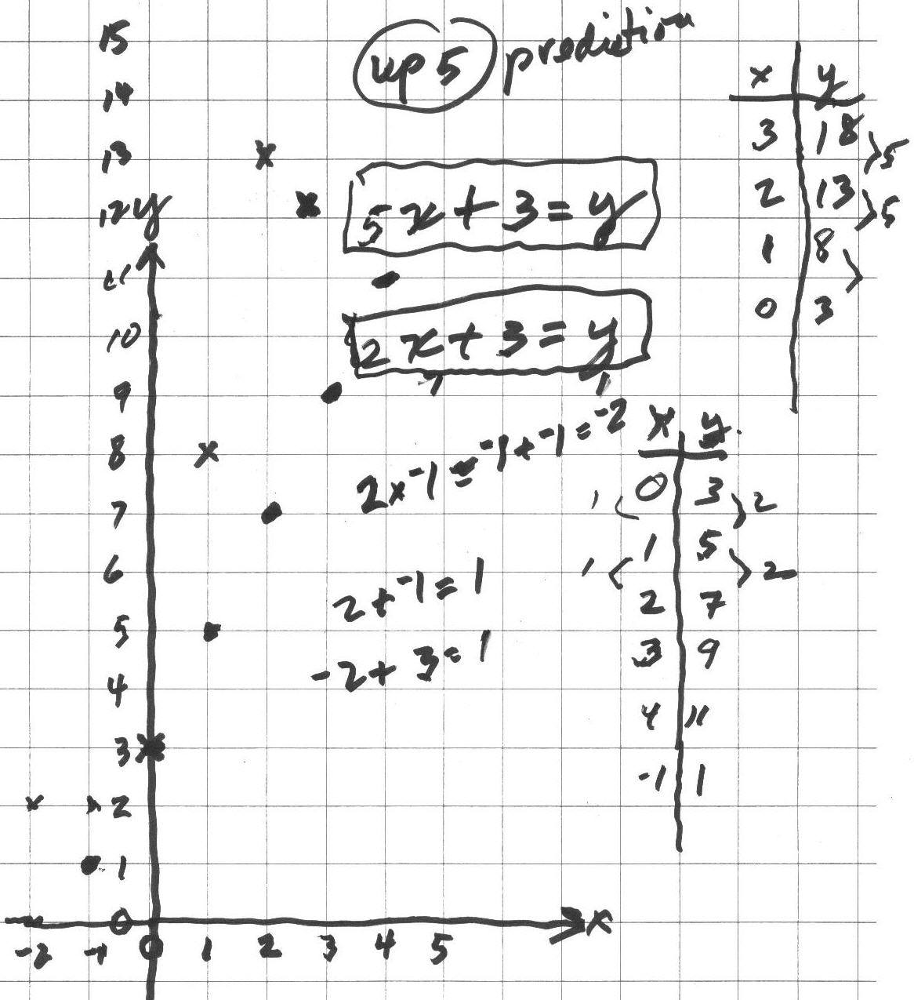
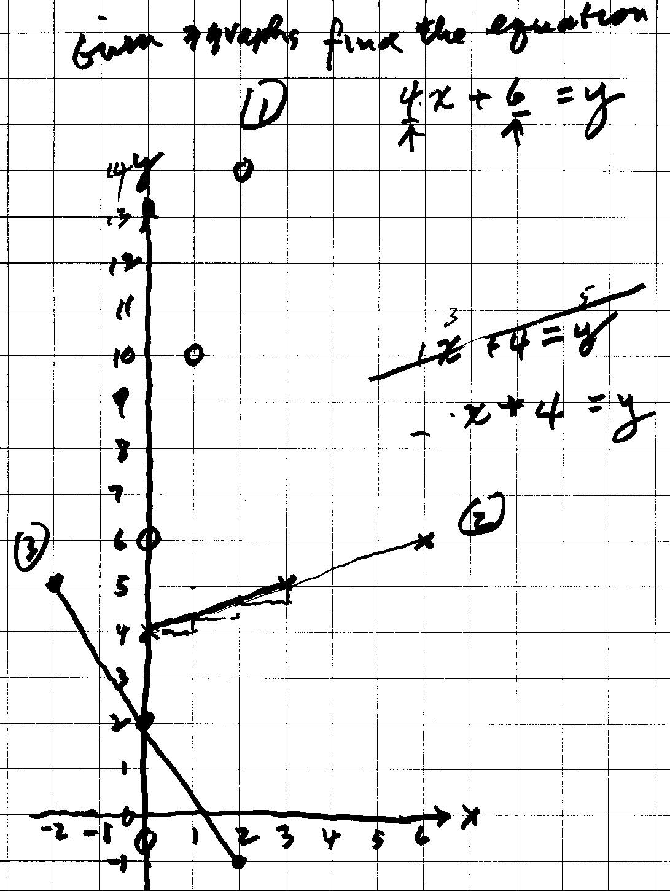
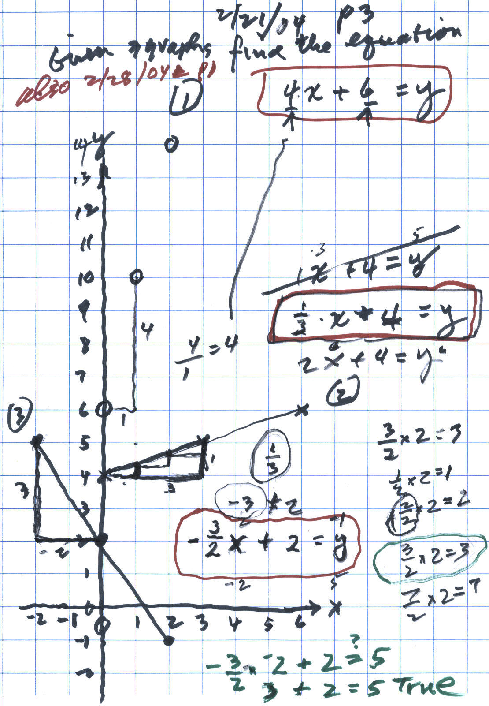
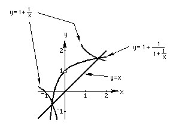
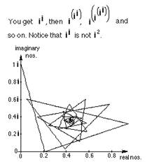

Graphs/Chapter 6+
Graphing
involves
algebra (by
writing a rule or equation using mathematical symbols), arithmetic
(using number pairs to make true statements), and
Don starts graphing in Chapter 1 with the partial sums of infinite series, but in chapter 6 he gets into slope and intercept as with Deryn below, which leads to the derivative - very important. Don starts graphing with youngsters as early as 4 years old (on Jan. 11, 2003 see how Johann's Mom made their kitchen floor into "graph paper").
Don worked with 9 yo Deryn from WV, via IM, using a webcam so she could see what Don was writing.
21 February 2004: Don started Deryn on graphing linear equations (straight lines): He started with 2x+3=y (the dot graph below). Deryn found pairs of numbers for x and y that would make the sentence true; she put these pairs in the lower table below. When she tried to follow the pattern, over 1 space to the right, the points went up 2 spaces. She made 2 mistakes in going down, she said (-2,2) and (-1,2) would work, but realized it was (-1,1). They checked to see if that pair made the sentence true; they put -1 in for x and 1 for y: 2*-1 + 3 ?= 1. They talked about this and Deryn saw that 2*-1= -1+-1= -2 and -2 + 3 = 1, so 2*-1 + 3 = 1 gives 1=1 which is true so (-1,1) worked in the equation. They looked at how in the table the y-numbers went up by 2 when the x-number increased by 1 and the pattern on the graph went the same way, and there was a 2 in the equation!

Don asked Deryn what would happen on the graph if the equation was changed to 5x+3=y. She correctly predicted the points would go up 5. Deryn found the pairs of numbers in the upper table above and plotted them. She found she was correct in her prediction! Don asked her where did the adding number of 3 show up on the graph? The point (0,3) was on both graphs, so the adding number 3 was where the graph crossed the y-axis, called the y-intercept! Deryn made up an equation 3x+2=y and successfully graphed it.
Then Don gave Deryn 3 graphs below, and Deryn was to find the equation for each. She quickly got the equation for graph #1, 4x+6=y. And tried 1x+4=y for graph #2, but that didn't work for the point (3,5). The 4 was right, so the first number couldn't be 1. If it was 1 she would go 1 to the right and 1 up, which is not correct. The pattern is 3 to the right and 1 up.

Don left Deryn to struggle a little on these last two equations for graphs #2 and #3. He will see what she comes up with next time!
Deryn worked with patterns in the numbers (arithmetic), and in the graphs (geometry), and in the equations (algebra), she multiplied and added negative and positive numbers, made a 2-variable sentence true, checked to see if her answers were correct, and made up an equation to graph, by herself.
You did a great job, Deryn!
28 February: Don & Deryn continued work on equations for graphs #2 and #3 below: Deryn's second try was the equation 2x+4=y for graph #2, but when she tried the point (3,5), she found the sentence 2*3+4=5 was not true. So that equation didn't work. They knew the 4 was correct because that's where the graph crossed the y-axis (when x=0, y=4). Don showed Deryn that on graph #1 the 4 came from over 1 up 4, so 4/1 = 4, the pattern and the first number multiplied by x.

In graph #2, they went 3 to the right and 1 up, or they went 1 to the right and went up 1/3. So the slope was 1/3, and the equation is (1/3)x+4=y. They tried (3,5) again for x and y, and this time it worked (1/3)*3 + 4 =5 was true. To get the equation for graph #3, she first realized first that the slope had to be negative, and would be -3/2. When they went to check the point (-2,5), they had the problem (-3/2)*(-2) + 2 =? 5. This brought up 2 problems, they had to work on the multiplication of two negative numbers which is positive (by patterns). They then worked on the problem of what is (3/2)*(2), which Don used the pattern (1/2)*2 = 1, (2/2)*2 = 2, and (3/2)*2 = 3 and (7/2)*2= 7. Then they went back to the equation and was (-3/2)*(-2) + 2 = 5 true. Well (-3/2)*(-2) = 3, so (-3/2)*(-2) + 2 = 5 is true! So the equation for graph #3 was (-3/2)x + 2 = y.
They then went to page 93 in Don's worksheet book to do more problems like these.
Fine job, Deryn!!
Click here to see all the work Deryn did with Don, including work on the Nautilus shell, negative exponents, solving quadratic equations+.
Don still finds textbooks that do not write negative 1 with the raised sign -1 like he has been doing for about 40 years. He sees things like
3 - (-1) in books , instead of 3 - -1 which is much simpler and mathmatically correct. Notice that Anushka picked this up without Don saying anything. Even calculators have a special key for negative 1 rather than -1 when subtracting. When graphing, Don makes sure there are spaces to the left and below the axes in order for his students to get into negative numbers early.
Other fine graphing links:
See Margaret's great question about graphs!
Jay,
a 2nd grader, graphs
x+y=6, x-y=6, and x*y=6
See Nanako's fine question about graphs on MAP at "fractions and negatives"
Anushka, 6 yo, graphs x+y=7 & sees patterns in division, and had done neither before
James from Tasmania (AU) on August 2, 2001, via IM, graphs parallel lines and other graphs later on.
Graph of the infinite sequence of partials sums (1/2, 3/4, 7/8, 15/16, 31/32...) of the infinite series

Graphing iteration of functions (in chapter 8) like 5+x/2 Maura, Chris uses negatives -1+x/-2 -> ?
The Tower Puzzle
or The Tower of Hanoi- leads to an exponential function (see
Ch.6) Sheri
figures out a rule for The Tower Puzzle
The Peg Game or
Shuttle Puzzle-leads to a quadratic function, a parabola (see
Shaleen’s graph)
Jack draws a penguin, then asks Don to help make the drawing using graphs of equations
Donna, a 4th grader, graphs a circle, then changes the equation!!!Marika graphs 3x, -(3x), and (-3)x , how are they different?
Dr. Tim sees the pattern of odd numbers in a parabola on March 17
Solve the quadratic equation x2 - x -1 = 0, to get x=1+1/x and then iterate this by putting 1+1/x in for x on the right side, then graph these 2, y= 1+1/x and y = 1+1/(1+1/x). Where do these graphs intersect?

Solve the quadratic equation x2 - 5x -6 = 0 to get x=5-6/x. Then iterate the right side and graph the starting number vs the limit of the infinite sequence formed.
The Hinged Mirrors-leads to a quadratic function, an hyperbola (see Ch.6) and Michael’s work. Lucas graphed this equation with negative numbers to get the other half of the hyperbola!
Graph of the length vs. perimeter of rectangles of area 36 (Maya)
Graph of the length vs. area of rectangles with perimeter of 20 (Kelda)
Graph of the Postal Scale function (a step function) done by Katy and Shelby
George graphed his rule x-2 + 7 after Jonty figured it out
Jonty&george Jonty, autistic did great as he graphed a parabola and moved it
Graph of y=ex, y=x and y=ln x y= ex and y= ln x are inverses
Kavi found identities for logarithms and Kevin graphed y= log10 x
Graph y = 1/x and y = 1/(x+1) to get logs and an infinite series for loge(1+a)
Geoffrey,
at age 11, used the IES applet to graph
all 6 trig functions
Don graphs the polar equation of r=2t , and shows how to do the "eye test" to see if sections of the curve are similar (like the Nautilus shell!!).
Shaleen
graphs
in
,
(chapter 11, #10) with n = 0, 1, 2, 3, … on the
Argand or complex plane
Graph the iteration of in , starting with n=i, on the Argand or complex plane.

Upon seeing
this graph in Don’s
worksheet book Ch.11#11a, IES in Japan, extended Don's
work with the great applet here
Points
on a graph of the spiral (1+i)n written different ways Ch. 11 relates to
e to sin, and cos, and to
DeMoivre
Graphs the 3 roots of the equation x3=1, at the same time, finding the 3 cube roots of 1
Graph
of 3 spirals in polar form: comparing The
Nautilus shell, The Fibonacci Numbers (the Golden Mean), & the Equal Tempered Chromatic Music Scale
Geometric transformations with matrices from Don's book Changing Shapes With Matrices, applet made by IES in Japan
Graph of z! from x=-6 to 4
Sueanne gets the sine of angles
by RATIOS on a unit circle, Sadie graphed
sine waves,
Ian,
a 4th grader, graphs the addition of sine waves at right angles to get
Lissajous figures
how moving a graph changes its equation
2 ways to rotate a triangle 90° CWUsing trig to do rotations with matrices
Don and his students Jay, Chris, and Elizabeth find a new number-the Dottie Number;
Don finds the equation of 2 the ellipses after Joe found the angle of 120o between the vertical bubbles between 2 plates.
Don graphs f(x), f'(x), and f"(x) on the same axes, to find points of inflexion, and relative maximum and minimum of f(x) and relates the graphs to each other.
Graph on a scientific graphing calculator or in Mathematica after doing lots of graphs by hand,
on graph paper!
{kind=link}
{kind=link}